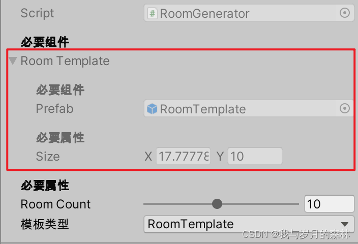

前言
在Unity开发中，有时候我们存在这种需求，需要在Inspector视图中可以查看字段信息但是无法对字段进行赋值，那么我们也可以像Unity内置的[SerializeField]、[Tooltip]等特性那样自定义一个特性，用于满足这个需求。
代码
EditDisabledAttribute.cs
1
2
3
4
5
6
| using System;
using UnityEngine;
[AttributeUsage(AttributeTargets.Field, AllowMultiple = false, Inherited = false)]
public class EditDisabledAttribute : PropertyAttribute { }
|
EditDisabledDrawer.cs
1
2
3
4
5
6
7
8
9
10
11
12
13
14
15
16
17
18
19
20
21
22
23
24
25
26
27
28
29
30
31
32
33
34
35
36
37
38
39
40
41
42
43
44
| #if UNITY_EDITOR
using System;
using UnityEngine;
using UnityEditor;
using System.Collections.Generic;
[CustomPropertyDrawer(typeof(EditDisabledAttribute))]
class EditDisabledDrawer : PropertyDrawer
{
public override float GetPropertyHeight(SerializedProperty property, GUIContent label)
{
return EditorGUI.GetPropertyHeight(property, label, true);
}
public override void OnGUI(Rect position, SerializedProperty property, GUIContent label)
{
if (IsArray() || IsList())
{
EditorGUI.BeginDisabledGroup(true);
EditorGUI.PropertyField(position, property, label, true);
EditorGUI.EndDisabledGroup();
}
else
{
GUI.enabled = false;
EditorGUI.PropertyField(position, property, label, true);
GUI.enabled = true;
}
}
private bool IsArray()
{
return fieldInfo.FieldType.IsArray;
}
private bool IsList()
{
return fieldInfo.FieldType.IsGenericType && fieldInfo.FieldType.GetGenericTypeDefinition() == typeof(List<>);
}
}
#endif
|
界面展示
